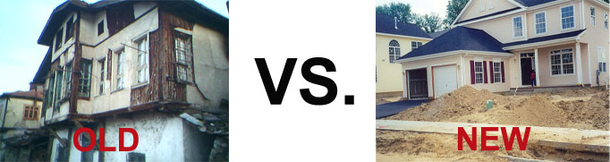

CheckMark Tutoring: How-To Guides for Canadians
CheckMark Tutoring: How-To Guides for Canadians Q: How old is too old for you ‘new’ home?
When searching for a home, one should pay attention to the age of the building they are considering purchasing. Most listings will include the “age of building” (e.g. 11 to 20 years) and if it does not, make sure you ask! Older homes come with more maintenance, out of date building codes and potentially dangerous chemicals in older building products (e.g. insulation, paint, etc.) among other things. Extensive renovations and updates an older home can of course negate these factors. If not, I believe it is best to stay away from homes built prior to 1985 (maximum 30 years old) especially if you are planning on doing renovations. Well maintained homes are of course the best homes.
Really old homes (e.g. 100 years) did not having building codes and standards which means that someone with very little knowledge/skills when it comes to home building could have been the builder. At the same time, new homes are not perfect either and will have some flaws. So let's compare them.

Q: Why would a newer home be better?
Newer homes are less likely to need repairs. Everything has a life span and that includes building materials. If older homes are well maintained and these things are replaced when they should be, then that would eliminate the risk of needing to do expensive repairs on a resale home. The estimated lifetime of various parts of your house before needing to be replaced is discussed in another question at the bottom of this page.
Newer homes were built with more regulations and comprehensive building codes so you can know that they are safe and efficient. In general, the newer the house is, the more energy efficient it should be and on average new homes use around 70% less energy than in houses built in 1975 (includes heating, lighting etc.). Homes nowadays are insulated against high heating and cooling costs and have more efficient glass. Energy performance requirements have been added to building codes by the Ontario government. Space-heating a home that was built today would used around 80% less energy than for a home that pretty much the same but built in 1975. Older homes can be drafty and that makes you turn up the heat to keep those areas warm. So what if you say, “well who cares about the environment?”. Another perspective is the cost savings an energy efficient home will allow. On average, someone living in a home built today saves approximately $1,400 on their natural gas bill (using close to 6,000 less metres cubed of natural gas). This also factors in the air leakages that are possible in an older home. You can save the environment AND save money while doing it! Sounds like a no brainer to me.
Q: How about if I bought a brand new home right from the developers?
If you buy a home in the building phase, then you will have an opportunity to customize the layout of the house to match your needs/tastes (e.g. floor plans, floor tiles, paint colours, kitchen cabinets, countertops, etc.). You won’t end up in a bidding war when purchasing a brand new home and they also come with a warranty that protects against defects in the construction of the home, delayed closings, etc. This is required of builders in Ontario (as well as in Quebec and British Columbia). Tarion protects the new home buyer for up to 1 year against any issues with the house not meeting the Ontario Building Code, that there are no defects in building materials and workmanship, that the home is fit for habitation and against any unauthorised substitutions (e.g. certain model of appliance or a certain brand of window). The first two years, Tarion will cover defects in work/materials as well as water damage, and a seven year warranty will cover any major structural defects. Coverage is provided by Tarion for Ontario buyers. Tarion is financed entirely be collecting fees from builder registrations/renewals and since all builders must be registered with Tarion (though it is best to check in case you’re dealing with some shady people), home buyers need not worry about purchasing a plan. It’s already covered! And even if the builder refuses to fix a problem you’re your house, Tarion will make sure it is fixed or a settlement is reached (though it can be a battle to get them to approve your claims). More information can be found here. It is still important to check Tarion’s online database/research for any prior builder issues (but only goes back 3 years) regarding the development company you are considering purchasing from (e.g. calling references, talking to other people who have purchased from them).
*NOTE: Make sure to get the new home warranty in writing and check online to make sure that the builder is registered as a new home builder.
Q: What are the biggest reasons that a newer home is a safer option for a homebuyer?
Some major considerations for older homes that can make buying a newer home a safer option are:
- Asbestos
- Asbestos was used in houses built before the 1980s (and occasionally in the 80s)
- WHAT IS IT? Asbestos is a carcinogenic heat-resistant silicate mineral (naturally occurring and minded mainly in Canada) that is woven into fabrics for heat/sound insulation and fire resistance throughout the home (e.g. heat insulation for pipes/furnaces, blown and sprayed wall or ceiling insulation). Asbestos was used often for insulation during the 1930-1950s. It is often mixed with other substances so it can be difficult to locate and must be tested for in a certified asbestos laboratory using a special microscope. When disturbed, these small asbestos fibres can float around for several days and are dangerous carcinogens if inhaled. Luckily, in most building materials, asbestos isn’t usually released into the air when disturbed. The issue is when renovation or demolition is needed. Often home owners would prefer to seal the asbestos (bind asbestos fibres together so they aren’t released) rather than remove it as it is a much cheaper option. That fix is only temporary but is fine if no major renovations are being done. It’s best to leave asbestos material alone unless you are interested in doing renovations/demolitions. Renovation costs to work with lead or asbestos is much more expensive as it is more dangerous for workers
- Airborne asbestos fibres were not recognized as a human carcinogen and major health hazard for workers until 1982
- Lead Paint
- Lead paint was legal with no restrictions and often up to 50% of the weight of paint was lead before 1976. In 1976, interior paint could only be 0.5% lead by weight and in 1990, it was eliminated from all paints.
- Houses prior to the 1960s are likely to contain lead-based paints unless renovations were done and some traces may be in houses up until the 1980s. “If a home was built before 1940 there's an 87 per cent chance it has lead paint”.
- Lead paint can be tested for with spot kits that change colour when applied to lead paint, X-ray fluorescence devices, or getting a sample tested by a laboratory.
- As with asbestos containing materials, sometimes it is better to leave lead-based paint then to remove it. The paint does not pose a risk if it isn’t flaking or chipping. It is possible to protect yourself and children by adding vinyl wallpaper over top. If you are doing renovations and need to remove the lead-based paint, ensure that you collect any residue (e.g. sanding dust) so that it is not inhaled.
- Major health risk to infants and children from lead dust left behind by renovations. Not a big concern for adult health
- Radon
- WHAT IS IT? Radon is a radioactive gas that is colourless, odourless and tasteless. It is formed by the breakdown of uranium which is naturally found in all soil and rock. It is the second leading cause of lung cancer in Canada. It’s estimated 2,000 people die every year in Canada due to radon (http://news.nationalpost.com/homes/mike-holmes-radon-makes-a-comeback).
- WHICH HOMES HAVE IT? Radon will be in ALL homes, regardless of age. All homes will have some level of radon in the air. Cracks in the foundations of homes allow for more entry points for radon, sandy soil allows more radon to flow through it than clay, and the way that the home was constructed (e.g. size/number of entry points) all factor into how much radon is in a home.
- Health Canada made recommendations in 2007 for new home construction to reduce radon concentration in homes
- Fixing a radon problem can cost up to $3000.
- Termites
- WHAT IS IT? Termites are a pale soft-bodied insects (they kind of look like fat, white ants) that live in colonies. There are many different types of termites. They are considered to be detritivores, meaning that they feed on dead organic material such as wood. That includes the wood that makes up your house!
- Ensure that your home inspector does a structural inspection (ideally prior to the price negotiations) to check for termites. If you want to be on the safe side then you can get multiple home inspectors.
- WHICH HOMES HAVE IT? Termites are often found in localized areas. For example, in Southern Ontario there are 30 areas in which they are predominant (Guelph, Cambridge, Waterloo, etc.). They are not very active in the winter. So if your neighbours discover termites then it would make a lot of sense to get your house checked. The quicker you can get your house inspected, the less chance there is that structural damage would have occurred. The older a home is, the more likely that termites would have had a chance to infest the house. However, it is possible that newer homes could be infested as well.
- Some indicators of termites are discoloured wood/paint, shelter tubes (look like streaks on walls), hollowed out areas that were eaten by termites. Basements are likely areas for termites to start their invasion since cracks in the concrete can allow them in.
- Expect to pay around $2000-3000 to rid yourself of an infection without including the costs required to repair damaged wood
- Old Electrical Systems
- Houses that were built prior to the 1940s will often have what’s called knob-and-tube wiring, which is not insurable. It uses ceramic knobs to hold wires and ceramic tubes as casings. Knob-and-tube wiring only uses two wires – a black (live) wire and a white (neutral) wire. Since there is no ground wire, the electrical system will be at risk of excess charge and shorts (overloading) that could lead to a fire. Degrading rubber wire insulation is also an issue. Outlets will have two prongs instead of three since there is no ground wire.
- Older homes also were not built to handle the electrical demands that people place on their homes today. The number of outlets in the rooms evidences this. Evaluating the potential for an electrical overload is very important to see if it will meet your demands.
- In order to bring the electrical system up to today’s standards it could cost more than $20,000.
- Inadequate Insulation
- Older homes (prior to the 1950s) often require renovation to add additional insulation (e.g. attic)
- Rusting Pipes
- Outdated plumbing often needs to be replaced
- Copper and galvanized steel pipes are expected to last around 40-60 years. The quality of galvanizing was actually better before the 1950s compared with the 1950s to 1970s so older doesn’t necessarily mean more problems. Galvanized pipes (which rust easily) have been replaced by copper and more commonly plastic (PVC) pipes in today’s homes since it is more durable.
- Make sure to have your home inspector check the pipes (often done with a camera nowadays) and ask the owner if there have been any issues. You may ask them to provide a written report from their home insurer that states there have been no claims related to water damage
- Low hot water pressure out of faucets is a tell tale sign that galvanized pipes have rusted and become plugged up. Hot water pipes are the first to be affected by rust o It is usually easiest to check the plumbing in crawl spaces or under the sinks since they are in plain view
- Finding leaks in the piping can be done by turning off the water inside the house to see if the water meter dial is still moving
- Sewer lines, which run outside of the house towards the street, are often damaged in old houses and can be checked by sending a video camera through the drainage system. This costs about $300
- Rotting Beams
- Once rot has begun, there is no reversing the progress. If the source of the moisture is determined and remedied then the rot will not progress, but the rot would still be there. A rotting beam is only a problem if there’s enough of it to weaken the board.
- If the rot has weakened the beam enough, the replacement of a main beam can cost over $2,000. If this is the case, then it may be wise to have a structural engineer look at the beam and determine if it will wreak havoc on the home’s structural integrity.
- Water Damage
- Water damage can occur in many ways and are indicated by water marks/stains, buckling floors (feel movement when walking over a spot), rust, and mould. A leaky roof or basement, mould in the walls, sewage backups, toilet flooding are just a few examples.
- Basement water leaks are often due to the ground outside sloping towards the house (called improper grading) or if the downspouts are not draining properly that create a build up of water against the foundation of the house. This can also cause cracks in the foundation and begin to rot the wood frame.
- Ask for proof that a water damage issue was repaired if you see water stains
- WARNING: Dishonest sellers have been known to cover up these issues by renovating the basement and/or putting fresh coats of paint onto walls and ceilings just prior to putting the house on the market.
- Roof Damage
- Look for signs of water build up, splitting, cracking, rotting, missing sections, blistering, etc.
- The roof of a house is one of the most overlooked parts of a buyer’s assessment. Over one third of homes inspected end up having some kind of a roof issue. Water spots are a tell tale sign of a leaky roof (or a clogged up gutter/downspout) but this is often covered up by freshly painted rooms/ceilings. These water spots may appear around skylights or anywhere that water can bunch up on the roof and slowly begin seeping into the house. A heavy rainfall will often result in the home buyer finding out about these problems after the fact and end up costing thousands of dollars.
- CHECK to make sure that your home inspector went onto the roof during the inspection and if they don’t then ask him/her how they are checking the roof
- Faulty Heating System
- Older heaters are not as efficient and do not remove dust that goes through them. Couple this with duct systems that can have asbestos materials in the insulation and it is a hazardous situation to say the least!
Q: What about mould?
Mold is not specific to older homes but it is important to ask about whether there have been any issues with mould in the past. In fact, newer homes often have greater moisture levels in the homes due to their energy efficiency (not allowing the house to ‘breathe’ as much as older homes) and can lead to mould issues.
Mold is created on damp or wet building materials or furniture if not cleaned/dried within 48 hours. Moisture is what leads to mold growth and indoor humidity above 60 percent can be a precursor. So a leaking sink or some water that leaked into the basement needs to be spotted quickly in order to stop mold growth. Mold can be dangerous and could possibly lead to lung problems but it depends on the sensitivity of the individual.
Places that mould could develop indoors are on window sills, fabrics, carpets, and walls in kitchens, laundry areas and washrooms. There is usually a weird smell emerges to indicate the presence of mold. Homeowners can take steps to get rid of mold on their own if it develops using a mix of detergent and bleach, dry the area, remove carpets/ceiling tiles (since they soak up the water) if they get too moldy, ensure the home is ventilated and run a fan.
Q: What can I do to avoid asbestos, lead paint and radon?
Hire a home inspector and make sure that you ask them to look for asbestos, lead paint and test the radon levels! After an offer to buy a house has been accepted, there is a period of time (e.g. five business days) in which the buyer can arrange for a home inspection. Often, home inspections to do not mention asbestos or other hazardous building materials. But it is easy to check for. Asbestos and lead paint inspection should include visual observations and also lab samples. Radon usually needs to be tested over a period of time (e.g. 3 months) and can be done with a DIY radon test kit but it is possible to hire someone to measure it (C-NRPP).
To check for asbestos, one Toronto Star article says, "simply lift the heating grilles that come through the floor," he advises. If the house has wood flooring, "look at the area where the duct touches the wood floor – if it's white, and looks like white paper or cardboard, it's probably asbestos and should not be touched. If it is black resin, it could be sealed asbestos." If there is a solid whitish covering over the furnace or heating pipes, then it is probably asbestos. To determine for sure if there is asbestos in a house built before the 1980s, then you will have to have testing done (e.g. floor tiles, siding, etc.). The seller does not legally have to disclose the presence of asbestos and other hazardous materials so it is up to the buyer to make sure that it is checked for before purchasing a new home. Removing asbestos MUST be done by a professional (unfortunately it is not a job for the DIYer), but if you do decide to go down that route, make sure you have a respirator with the ability to filter out asbestos fibres and seal the area.
Q: How often should things be replaced in a home?
*the number of years until replacement/repair listed below are approximate timelines. Some information taken from: www.thisoldhouse.com
- Siding
- Brick, stone and fiber cement should last the lifetime of the house. Vinyl needs to be replaced after a long period of time (over 50 years), while wood needs to be replaced more often.
- Gutters
- 50 years for copper gutters while aluminum gutters last 25 years. Downspouts should last a little longer for both.
- Roof
- A typical composition shingle (fiberglass mat core with asphalt/crushed rock for weather resistance) exterior roof is usually made to last 20-30 years before maintenance is needed
- Copper, slate, clay/concrete roofs can last over 50 years
- Asphalt shingles, fiber cement shingles and wood shakes last 20-30 years
- Furnace
- 15 years
- Air Conditioning Compressor
- 10-15 years in a year round warm climate, 20-25 years in a climate like Toronto (use it for less than half of the year)
- If your air conditioning unit is older than 25 years then it may make sense to upgrade to a new unit for better efficiency/reliability.
- Air conditioners will last longer if they are cleaned/maintained on a regular basis. There’s more to it than just turning them on and off. Cleaning the compressors (in the outdoor portion of the system) and the coils in them to ensure they aren’t clogged is important. This can be done with a simple garden hose. Clear any debris from the outside unit. Air ducts should also be cleaned and checked for leaks every few years as well as it decreases the efficiency of an air conditioner. Hiring an HVAC technician is usually needed in order to do this properly. Change the filter periodically as well (every month that the AC unit is on).
- Heat Pump (used in AC)
- 15 years
- Electric/Gas Hot Water Heater
- 10-15 years
- Tankless Water Heater
- 20 years
- Hot Water Boiler
- Up to 50 years
- Thermostats
- 35 years
- Refrigerators/Dryers
- 15 years
- Dishwashers
- 10 years
- Microwaves
- 10 years
- Decks
- 20 years
- Acrylic Kitchen Sinks
- 50 years
- Kitchen Faucets
- 15 years
- Bathroom Shower (enclosure and door)
- 50 years
- Vinyl Floors
- 50 years
- Carpet
- 10 years
- Linoleum Floor (think of school hallway floor tiles)
- 30 years
- Foundations
- Should last the lifetime of the house. However, waterproofing would last 10 years and termite proofing last about the same
- Framing
- Should last the lifetime of the house unless softwood, hardboard or plywood are used in which case it would last about 30 years. Oriented Strand Board (OSB) and particleboard last for around 60 years
- Garage Door
- Openers last 15 years
- Smoke Detector
- 10 years
- Paint
- 20 years for both interior and exterior
- Sprinklers/valves
- 20 years
- PVC piping underground
- 30 years
- Swimming Pool
- Concrete shell lasts 30 years while the interior plaster/tile last around 20 years
- Windows
- Aluminum windows last around 25 years while wooden windows last around 35 years
- Insulation
- 100 years if kept dry and undamaged
Q: OK, this page is making me want to buy a newer home. Is there any reason why an older home would be better?
Although the benefits of a newer home far outweigh older homes, there are several reasons for buying an older home.
One reason why someone would want an older home is for the ‘historic’ beauty. Detailing in older homes is not the same as the ‘cookie cutter’ houses you see nowadays. Also, an older home will be in an already established neighbourhood most likely. This allows you to essentially choose your neighbourhood and the people you live around which can be a major factor in how happy you are with your home purchase.
Older houses and neighbourhoods will have more mature trees and plants. The yards and gardens will also be well developed and fences already installed. Newer neighbourhoods may still be in the process of developing which means lots of dirt and dust as well as construction noise. The house will have had plenty of time to settle into the soil with an older house and you will know whether there are cracks in the foundation/walls due to this settling process.
You can track sales performances of the houses in the area that you are thinking about buying a house in. This allows a buyer to accurately determine the value of the home and see how much it has appreciated over the years.
There CAN be financial advantages to buying a resale home. Brand new homes often cost a little more than a similar sized resale home. Buying resale homes will allow buyers to avoid HST/GST that is applied to brand new homes that are bought right from the developers (though there are some rebates for new home buyers), which can significantly reduce the cost of a house. A brand new home also will not have many features that homeowners generally add to the house over time. These things will cost you additional money. For example, the landscaping for a brand new home needs to be finished by the buyer, the driveway will be unpaved, shutters/decks/sheds/pools absent, etc.
The idea that older things were built better doesn’t necessarily apply to houses as building codes/standards have generally increased the quality of homes. Often you don’t know what you’re getting with older homes but if you do your research and ask the right questions then it is possible to find some quality homes even if they are 100 years old (e.g. a thick stone foundation wall will last longer then the stucco/wood frames of today). If you buy an older home then find out what renovations have been made, who made them and when they occurred. If the house needs renovations, it’s a good idea to bring an experienced contractor (along with a home inspector) to check out the house prior to buying. He/she can tell you what it will cost to make the necessary renovations, quality of materials used in the house, methods of construction/renovations, etc.
Q: So is there any reason for me to hire a real estate agent if I know that I am going to buy a brand new home right from the developer?
There are some reasons why an EXPERIENCED real estate professional could help you when buying a new home. If the home is still in the development stage, they could help you negotiate with the builder to provide you with finishes and building layouts that will increase the value of the house when you decide to sell.
References
http://www.canada.com/older+homes+better/6855010/story.html
http://www.tarion.com/Warranty-Protection/Pages/default.aspx
http://askanarchitect.com.au/ask/content/leaky-roof-can-be-expensive-and-dangerous-
home-buyers
http://www.thestar.com/life/homes/2012/08/17/good_home_inspections_find_water_
problems.html